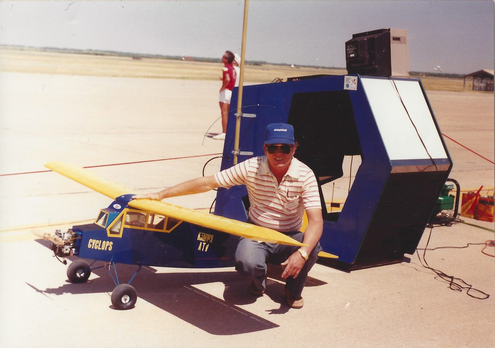
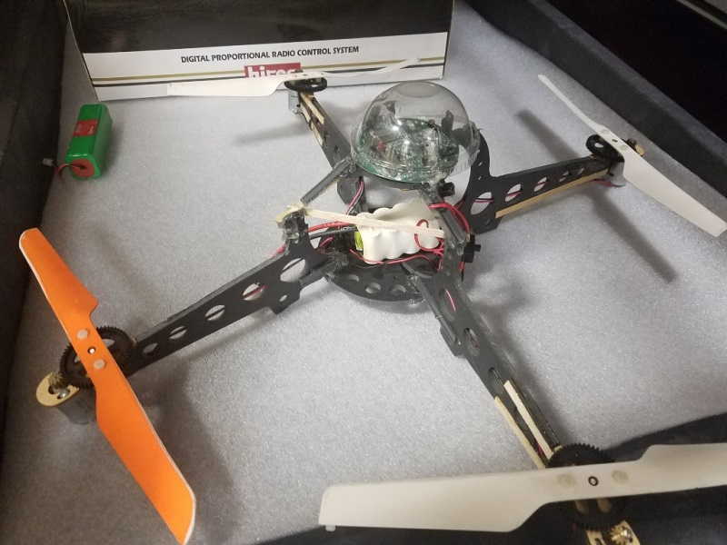
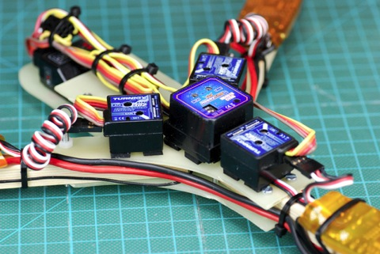
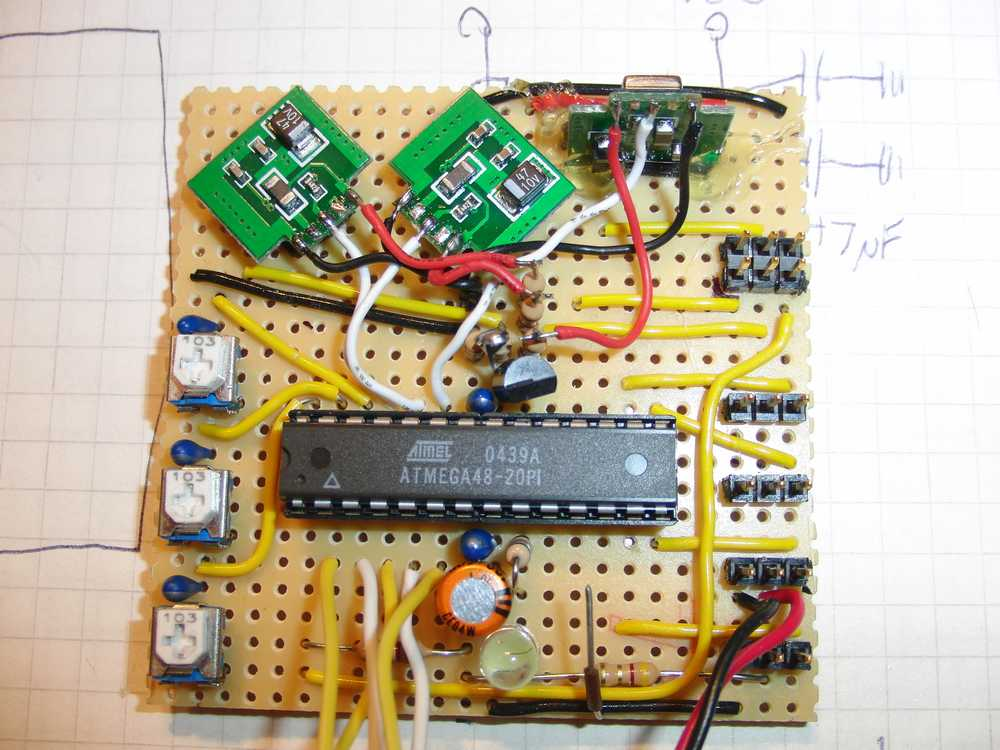
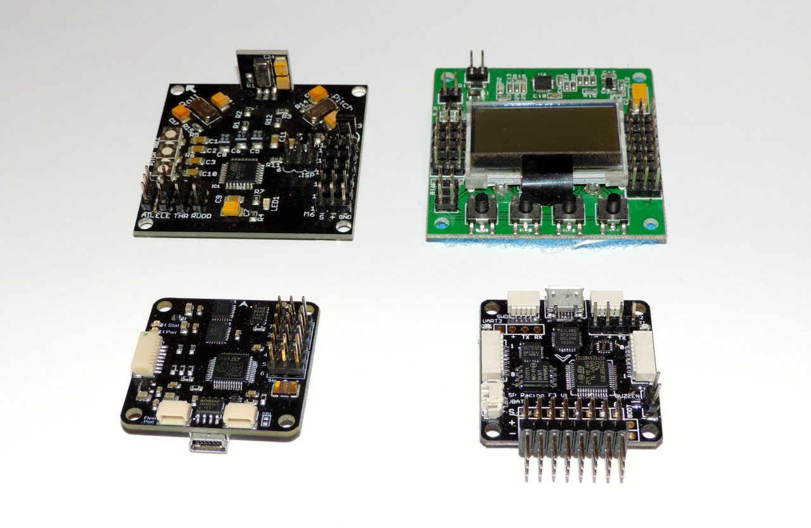
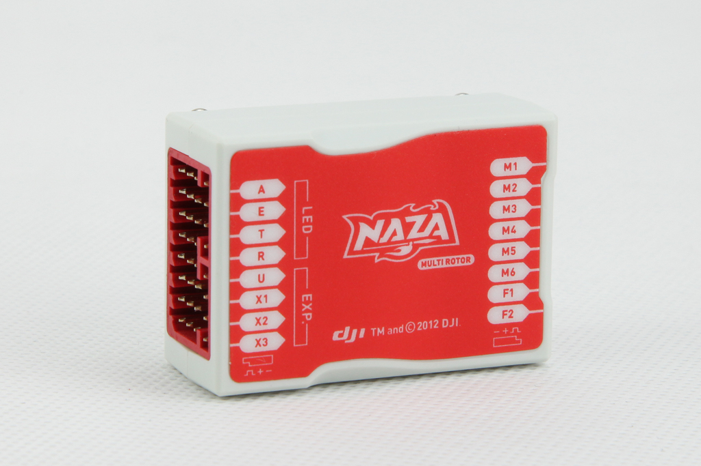
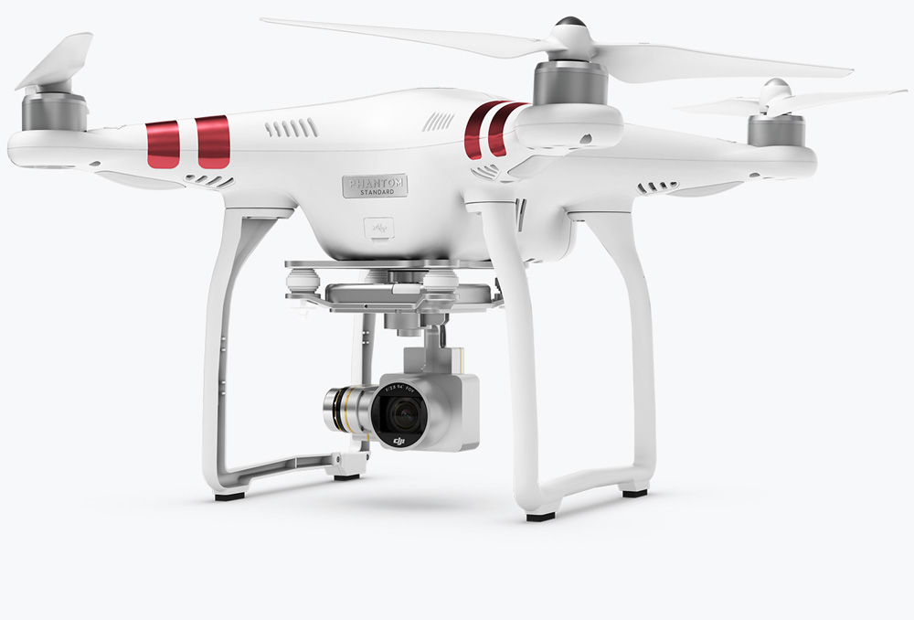

-
1989
Begin van FPV
De elektrotechnisch ingenieur Carl Berry bouwde in 1989 een cockpit van een vliegtuig na met een Sega Arcade machine en kon zo in FPV met zijn vliegtuig vliegen. 
-
1999
Eerste commerciele Drone
De eerste Quadcopter, met naam Draganflyer was heel populair aan de MIT en de Vanderbilt universiteit maar kwam nooit echt in de 'RC-community' terecht. 
-
2004
FPV met een Drone
David Windestal was een van de eerste personen die aan FPV met een drone deed(zijn zelfgebouwde tricopter). Deze tricopter had nog altijd 4 gyros nodig en was ook niet heel stabiel omdat er de techniek nog niet was, er moesten transmitters gemixed worden en ge moest veel kennen van gyro's (not talking bout the food) om hem ook maar half-stabiel te krijgen 
-
2009
Het KK board
In 2009 heeft Rolf "KaptainKuk" Bakke schemas uitgebracht voor het bouwen van zijn KK board, een controller board voor een drone. Het revolutionaire aan deze controller was dat ge verschillende firmwares kon flashen om verschillende versies van drones te ondersteunen, niet veel later werden er commerciele versies gemaakt en verkocht
 -
2010
Revolution
De revolutie rond de flight controllers was niet meer te stoppen, in 2010 kwam de Open Source Arducopter uit, hij ondersteunde zelfs "autonomous flight". Toen kwam het al bijna legendarische CopterControl board van OpenPilot uit met een GUI voor de setup en het tuning, het probleem was dat de vraag te hoog was en het niet zo snel kon worden gemaakt. vanaf boven links: het commercieel kkboard, het HobbyKing KK2, het suoper zeldzaam Open Pilot Copter Control Board en tenslotte een SP Racing F3 board van tegenwoordig.
-
2011
Gamechanger
In 2011 kwam er een echte gamechanger van het tegenwoordig heel bekende merk DJI: De Naza v1 flight controller Board. Samen met de FlameWheel f450 quad en een f550 hex kit. Dit kit was super simpel in mekaar te steken en ook het vliegen was heirdoor veel gemakkelijker. Je kon er boven gewoon een receiver een VTX en een camera op zetten en ge waard klaar om met FPV te vliegen 
-
2013
De tegenwoordige standaard
In 2013 heeft DJI 'The Phantom" uitgebracht een ready to fly quadcopter, dit betekent dat je hem alleen maar hoefde op te starten en ge kon direct beginnen met vliegen. Dit maakte het ook voor mensen die nie zo handig zijn met elektronica heel interessant. Tegenwoordig zijn er volledige sets van een drone goggles en een besturing beschikbaar op diverse sites zoals Aliexpress voor onder de 100Euro, van een droom is dus realiteit geworden voor een kleine prijs. 